A Living Meta-Analysis of the Modafinil Literature
Multi-Engine Retrieval, De-duplication, Embeddings, and Bibliometrics for a Single Search Term
1 Abstract
Manual synthesis cannot keep pace with a fast-growing research literature, and ad-hoc reviews bind no evidence to a reproducible pipeline. We present a configurable, reproducible meta-analysis framework that takes a single search term and produces a complete quantitative portrait of its literature. For this instance the term is Modafinil. The pipeline dispatches across 7 literature engines (arXiv, OpenAlex, Semantic Scholar, Crossref, PubMed, SovietRxiv, and ChinaRxiv), each degrading gracefully to a skipped source when an API key or the network is unavailable, then merges and de-duplicates records by a canonical identifier hierarchy (DOI \(>\) arXiv ID \(>\) Semantic Scholar ID \(>\) OpenAlex ID \(>\) title digest) into a corpus of \(N = 2302\) records spanning 2000–2026 (26 years). Records are classified into a configurable 6-bucket subfield taxonomy (Clinical Sleep, Cognition, Pharmacology, Psychiatry, Safety, and Neuroscience); the largest subfield is Clinical Sleep (64.3% of the classified corpus). The corpus grows at a compound annual rate of 3.45% (mean year-over-year growth 6.3%, doubling time 11.3 years), peaking in 2025 with 112 records.
Non-negative matrix factorization extracts 5 latent topics over a 500-feature vocabulary, offline deterministic embeddings place every title, abstract, and (when available) full text in a shared vector space, and citation-network analysis exposes the corpus’s internal structure (8,772 intra-corpus edges across 2204 nodes, 1377 communities, graph density 0.18%). Of 38,802 total outgoing references, 22.6% resolve to another record inside the corpus. Abstract coverage stands at 55.5%, open-access status is known for 14.4% of records, and 40.9% have a direct PDF link. An optional, LLM-gated knowledge-graph stage scores the 6 hypotheses explored against the evidence. This run produced 18 publication-quality figures.
Every domain-specific value in this manuscript — the search term, keyword set, engine roster, subfield taxonomy, and hypotheses — is injected from a single configuration file and the pipeline’s own outputs; re-targeting the configuration re-targets the entire paper. The result is a reusable architecture for living literature reviews: continuously re-runnable, evidence-bound syntheses for any topic.
Keywords: modafinil, meta-analysis, literature retrieval, bibliometrics, record de-duplication, full-text mining, document embeddings, citation network, topic modeling, entity extraction, wakefulness, cognitive enhancement, reproducible research
2 Introduction
The scholarly literature on any active topic grows faster than any individual can read. A researcher entering a field needs to know how large it is, how fast it is growing, what sub-areas compose it, which works anchor its citation structure, what language and concepts recur, and which claims the field actually tests. Answering those questions by hand is slow, unrepeatable, and binds no number to evidence. Systematic reviews, while the gold standard for evidence synthesis, are labour-intensive and become stale between updates — the Cochrane review cycle, for instance, targets a two-year refresh interval that many fields outpace (Page et al. 2021). Bibliometric dashboards (Scopus, Web of Science, Dimensions) offer breadth but no reproducible link from a reported statistic to a regenerable artifact, and they do not frame or test domain-specific hypotheses.
This project is a configurable, reproducible meta-analysis template. It takes one search term and produces a quantitative portrait of that term’s literature, with every reported number traceable to a committed artifact and regenerable by re-running the pipeline. The bundled instance targets Modafinil, a wakefulness-promoting agent with a large, multi-disciplinary literature spanning clinical sleep medicine, cognitive neuroscience, pharmacology, psychiatry, and safety research; pointing the configuration at a different term re-targets the whole analysis with no code change.
2.1 Research Questions
The pipeline is designed around four research questions (RQs) that a researcher entering the field would ask:
RQ1 — Field size and growth. How large is the literature on Modafinil, how fast is it growing, and when did it peak? The corpus of \(N = 2302\) records spanning 2000–2026 answers this directly, with a compound annual growth rate of 3.45% and a peak in 2025.
RQ2 — Subfield composition. What sub-areas compose the literature, and what is their relative weight? A configurable 6-bucket taxonomy (Clinical Sleep, Cognition, Pharmacology, Psychiatry, Safety, and Neuroscience) classifies every record, with Clinical Sleep the largest bucket at 64.3%.
RQ3 — Topical and linguistic structure. What language and concepts recur, and what latent topics cross-cut the keyword taxonomy? TF-IDF over a 500-feature vocabulary feeds non-negative matrix factorization, which extracts 5 latent topics. The top vocabulary terms are: modafinil, treatment, study, effects, patients, results, sleep, used, use, drug, studies, clinical, mg, using, placebo, cognitive, associated, effect, however, disorder.
RQ4 — Citation geometry and evidence landscape. Which works anchor the citation structure, how self-contained is the retrieved slice, and which claims does the field test? The citation network of 2204 nodes and 8,772 edges (22.6% reference resolution rate) exposes hubs, authorities, and communities, while 6 configured hypotheses frame the evidence landscape.
2.2 Contributions
The pipeline contributes an end-to-end, domain-agnostic workflow:
Multiple-engine retrieval with graceful degradation. Records are gathered from 7 independent engines (arXiv, OpenAlex, Semantic Scholar, Crossref, PubMed, SovietRxiv, and ChinaRxiv). An engine with no API key or no network reports a skipped status; the run completes from whatever engines remain plus a committed offline corpus. For this live run, OpenAlex contributed the largest share of records, followed by Crossref and PubMed; Semantic Scholar was rate-limited (HTTP 429) and returned zero records without aborting the pipeline.
Record de-duplication. Heterogeneous records are merged by a canonical identifier hierarchy, keeping the most complete version of each work. Of 2302 retrieved records, 2248 carry DOIs, 932 carry OpenAlex IDs, and 1 carry arXiv IDs.
Descriptive and bibliometric analysis. Counts by year, venue, and author; growth metrics (CAGR 3.45%, doubling time 11.3 years); a configurable 6-bucket subfield classification; topic models; and a citation network with 1377 communities.
Language, entity, and embedding analysis. Keyphrase and entity extraction and offline deterministic document embeddings over titles, abstracts, and full text. The TF-IDF vocabulary of 500 features captures the lexical landscape.
Optional hypothesis evidence. An LLM-gated knowledge-graph stage scores the 6 configured hypotheses explored against the corpus.
Because the writing itself is token-injected from configuration and
pipeline outputs, the manuscript is part of the reproducible artifact
rather than a separate hand-authored narrative. Every number, table, and
figure reference in this document traces to a committed, regenerable
file under output/.
3 Methods Overview
The pipeline is a sequence of deterministic stages, each reading the
previous stage’s committed artifacts and writing its own. Business logic
lives in tested src/ modules; the numbered
scripts/ are thin orchestrators that wire I/O,
configuration loading, logging, and stage sequencing. The architecture
follows the thin orchestrator pattern: no computational logic resides in
scripts.
3.1 Pipeline Stages
Retrieval (
01_literature_search.py) — dispatch the configured query across 7 engines (arXiv, OpenAlex, Semantic Scholar, Crossref, PubMed, SovietRxiv, and ChinaRxiv), merge, and de-duplicate intocorpus.jsonl. Each engine is an isolated adapter exposing a uniformsearch(query) -> list[Paper]interface; engines that are keyless need no credentials, while Semantic Scholar uses a key when present. SovietRxiv and ChinaRxiv share a unified API with an optionalX-API-Emailheader for the polite rate-limit pool (300/min vs 30/min anonymous).Meta-analysis (
02_meta_analysis_pipeline.py) — subfield classification, temporal metrics, TF-IDF, non-negative matrix factorization topics, and the citation network. This stage readscorpus.jsonland emitssubfield_classification.json,temporal_analysis.json,tfidf_data.json,topics.json,citation_network.json, andcitation_graph.gml.Knowledge graph (
03_build_knowledge_graph.py, optional/LLM-gated) — extract assertions and score the 6 configured hypotheses. Outputsnanopublications.jsonl,hypothesis_scores.json, andassertion_summary.json.Figures (
04_generate_figures.py) — render 18 publication-ready visualizations from the analysis JSON outputs. All figures use a colourblind-safe palette (Wong 2011), high-contrast labels at \(\geq 16\)pt, and a headless matplotlib backend (Agg).Injection (
05_inject_variables.py) — compute manuscript variables from the artifacts above and substitute them into these Markdown sections. An unresolved placeholder is a hard error, not a silent gap.Fulltext assessment (
06_fulltext_assessment.py) — report abstract coverage (55.5%), open-access status (14.4%), and PDF availability (40.9%) across the corpus.
3.2 Reproducibility Model
The system runs offline and deterministically by
default: a committed synthetic seed corpus drives every stage with fixed
seeds (seed = 42 for NMF, SVD, and graph layouts), so re-running
produces byte-identical outputs. A live run with engines enabled and
credentials supplied replaces the seed corpus with real records — as in
this instance, which retrieved 2302 live records. The template is
domain-agnostic: the search term, query, keyword set, subfield taxonomy,
and hypotheses all come from manuscript/config.yaml.
3.3 Configuration Surface
A single manuscript/config.yaml controls:
- Search parameters: term, query string, per-engine queries, relevance keywords, start year, max results, resume/clear behaviour
- Engine toggles: arXiv, OpenAlex, Semantic Scholar, Crossref, PubMed, SovietRxiv, ChinaRxiv (each independently enabled or disabled)
- SovietRxiv/ChinaRxiv settings: optional
api_emailfor the polite pool,sourcefilter (russiarxivorchinaxiv) - Full-text download: opt-in Unpaywall resolution
with
unpaywall_email - Embeddings: method (
tfidf_svdortransformer), dimensionality, max features - Knowledge graph: checkpoint interval, LLM model, base URL, temperature, max tokens
- Hypothesis definitions: 6 named hypotheses with scope labels
- Subfield taxonomy: 6 buckets, each with a keyword list
- Paper metadata: title, authors, DOI, keywords, license, repository URL
4 Retrieval and De-duplication
Retrieval dispatches the configured query across 7 independent
literature engines (arXiv, OpenAlex, Semantic Scholar, Crossref, PubMed,
SovietRxiv, and ChinaRxiv). Each engine is an isolated adapter exposing
a uniform search(query) -> list[Record] interface;
engines that are keyless — arXiv, OpenAlex (Priem et al. 2022), Crossref (Hendricks et al.
2020), PubMed/Entrez (Sayers et al.
2022), SovietRxiv / RussiaRxiv, and ChinaRxiv — need no
credentials, while Semantic Scholar (Kinney et al.
2023) uses a key when present. SovietRxiv is a translated
archive of Soviet-era scientific preprints sourced from Math-Net.Ru and
CyberLeninka (SovietRxiv Project
2026); ChinaRxiv serves translated Chinese preprints from
ChinaXiv via the same unified API. Both retain original-language PDFs
alongside each translation, and their polite rate-limit pool (300/min vs
30/min anonymous) is activated by an optional X-API-Email
header. Optional full-text resolution queries Unpaywall (Piwowar et al. 2018) for open-access
locations. Multiple dispatch degrades gracefully: an
engine that is disabled in the configuration, lacks a required key, or
cannot reach the network returns a skipped status, and the run
completes from the remaining engines plus the committed offline
corpus.
4.1 Engine Details
Each engine adapter follows a uniform contract: a module-level API
URL constant, a pure _parse_* parser function, and a
search_* entry point with pagination, retry, and graceful
error handling. All functions accept an injectable base_url
parameter for hermetic testing with pytest-httpserver — no
engine hardcodes its URL inside the function body.
| Engine | Rate limit | Pagination | Auth | Records (this run) |
|---|---|---|---|---|
| arXiv | 3s between requests | 100/page, offset | Keyless | Sparse |
| Semantic Scholar | 1 req/s (unauth.) | 100/page, offset | Optional key | Skipped (429) |
| OpenAlex | Polite pool (mailto) | 200/page, cursor | Keyless | 1,000 |
| Crossref | Polite pool (mailto) | 1,000/page, offset | Keyless | 1,000 |
| PubMed | NCBI usage policy | retstart/retmax | Keyless | 986 |
| SovietRxiv | 30/min (300/min polite) | 1–100/page, cursor | X-API-Email |
0 |
| ChinaRxiv | 30/min (300/min polite) | 1–100/page, cursor | X-API-Email |
0 |
SovietRxiv and ChinaRxiv returned zero records for the modafinil query, which is expected: the Soviet-era archive covers mathematics, physics, and engineering preprints, while ChinaXiv covers Chinese scientific preprints, and neither domain has substantial modafinil literature. The engines dispatched correctly, queried the live API, and returned empty result sets without error — confirming graceful degradation.
4.2 Canonical Identifier Hierarchy
Heterogeneous records are reconciled by a canonical identifier hierarchy — DOI \(>\) arXiv ID \(>\) Semantic Scholar ID \(>\) OpenAlex ID \(>\) a stable digest of the normalized title. When two records share a canonical identifier they are merged, keeping the version with the most complete metadata (a count of non-None optional fields). The DOI is normalized: case-folded, resolver-prefix stripped, so the same paper returned by two engines under case/format-variant DOIs merges. For this run, 2248 records carry DOIs, 932 carry OpenAlex IDs, and 1 carry arXiv IDs. The de-duplicated corpus for this run holds \(N = 2302\) records published across 2000–2026.
4.3 Relevance Filtering
After de-duplication, a relevance filter drops papers whose title and abstract contain none of the configured relevance keywords (modafinil, armodafinil, provigil, wakefulness, narcolepsy, cognitive enhancement, alertness, sleep deprivation, vigilance, eugeroic). Keywords are matched case-insensitively; an empty keyword list is treated as no filter to avoid silently wiping the corpus. A year filter then excludes papers published before the configured start year (2000).
5 Full Text, Language, and Embeddings
Beyond bibliographic metadata, the pipeline mines the textual content of each record. This stage bridges the gap between a bibliographic inventory and a semantic understanding of the literature.
5.1 Full-Text Availability
An open-access resolver maps each record to a downloadable PDF where
one exists (a known pdf_url, or an Unpaywall lookup by
DOI), and an opt-in, network-gated downloader fetches it to a
deterministic path. Full-text availability is summarized without
requiring any download, so the offline default still reports coverage.
For this run:
- Abstract coverage: 55.5% of records (1277 of
- carry an abstract; 1025 records lack one.
- Open-access status: 14.4% of records are open access (331 records); the remainder are closed or unknown.
- PDF availability: 40.9% of records (941) have a direct PDF link; 940 have a publisher PDF, and 1361 have no full-text source available.
The identifier coverage for this corpus is: 2248 DOIs, 932 OpenAlex IDs, and 1 arXiv IDs. DOI coverage dominates, enabling robust cross-engine de-duplication.
5.2 Language and Entity Extraction
Titles, abstracts, and (when present) full text are tokenized and reduced to keyphrases and named entities by offline, dependency-light extractors — no mandatory LLM. Term-frequency statistics drive a TF-IDF representation over a 500-feature vocabulary. The most frequent terms in the corpus are: modafinil, treatment, study, effects, patients, results, sleep, used, use, drug, studies, clinical, mg, using, placebo, cognitive, associated, effect, however, disorder. These terms reflect the clinical, pharmacological, and cognitive vocabulary characteristic of the modafinil literature.
5.3 Embeddings
Every title, abstract, and full text is embedded into a shared vector
space by a deterministic, offline method — TF-IDF followed by truncated
SVD, i.e. latent semantic analysis (Deerwester et
al. 1990). The embedding dimensionality is 50 components
(configurable via project_config.embeddings.n_components),
and the TF-IDF vocabulary is capped at 500 features (configurable via
project_config.embeddings.max_features). The embedding is
byte-stable across runs: the same input text always yields identical
vectors, so the derived similarity matrix, nearest-neighbour lists,
clusters, and two-dimensional projection are all reproducible.
An optional transformer backend can be enabled by setting
project_config.embeddings.method: transformer (requires the
embeddings extra), which upgrades the embedding fidelity
without changing the interface or downstream analysis.
The embeddings support semantic retrieval over the corpus and feed two visualizations: a PCA two-dimensional projection ((Figure pca embeddings)) that maps the topical geography of the literature, and a hierarchical clustering dendrogram ((Figure dendrogram)) that reveals the similarity structure of the document collection.
6 Bibliometric and Temporal Analysis
Descriptive statistics summarize the corpus along every available axis: counts by year, venue, and author; citation-count distributions; and author productivity. Temporal analysis fits the publication time series, reporting a compound annual growth rate of 3.45% across 2000–2026 (a span of 26 years), with a mean year-over-year growth rate of 6.3% and a doubling time of 11.3 years. The peak publication year is 2025 with 112 records.
6.1 Growth Metrics
The compound annual growth rate (CAGR) is computed as:
\[ \text{CAGR} = \left(\frac{N_{\text{end}}}{N_{\text{start}}}\right)^{1/(\text{year span})} - 1 \]
where \(N_{\text{start}}\) is the
publication count in the first year (2000) and \(N_{\text{end}}\) is the count in the last
year (2026). The mean year-over-year growth rate \(\bar{g}\) is the arithmetic mean of annual
ratios. The doubling time is \(t_d = \ln(2) /
\ln(1 + \text{CAGR})\). These metrics are stored in
temporal_analysis.json and injected into the manuscript at
render time.
6.2 Subfield Classification
Subfield classification assigns each record to one of 6 configurable
buckets (Clinical Sleep, Cognition, Pharmacology, Psychiatry, Safety,
and Neuroscience) by priority-aware keyword matching; the taxonomy is
defined entirely in configuration
(project_config.subfield_keywords). The largest bucket is
Clinical Sleep at 64.3% of the classified corpus. A
per-subfield temporal breakdown (subfield_timeline.json)
tracks how each sub-area has grown over time, enabling identification of
emerging or declining research threads.
6.3 Topic Modeling
A TF-IDF term-weighting of titles and abstracts (Salton and Buckley 1988) feeds non-negative matrix factorization (NMF) (Lee and Seung 1999), implemented with scikit-learn (Pedregosa et al. 2011). NMF decomposes the document-term matrix \(\mathbf{V} \approx \mathbf{W} \mathbf{H}\), where \(\mathbf{W}\) is the document-topic matrix and \(\mathbf{H}\) is the topic-term matrix. The factorization extracts 5 latent topics that cross-cut the keyword taxonomy. The random seed is fixed at 42 for reproducibility. The reporting follows established systematic-review practice (Page et al. 2021), with every figure and statistic traceable to a committed artifact.
7 Optional Knowledge-Graph Layer
An optional, LLM-gated stage lifts the corpus from
bibliometrics to hypothesis-level evidence. For each record, a local
language model (Ollama, default model gemma3:4b) extracts
structured assertions — each encoding a direction (supports /
contradicts / neutral), a confidence score, and a short natural-language
justification — against the 6 hypotheses declared in configuration.
Assertions are serialized as RDF-compatible nanopublications (Kuhn et al. 2016) and scored by a
citation-weighted evidence function.
7.1 Assertion Model
Each assertion \(a\) encodes:
- Direction: \(\text{supports}\), \(\text{contradicts}\), or \(\text{neutral}\) with respect to a hypothesis \(H\)
- Confidence: a score \(c_a \in [0, 1]\) from the LLM
- Citation weight: \(\log(1 + n_{\text{cites}})\), where \(n_{\text{cites}}\) is the citation count of the asserting paper
The evidence score for hypothesis \(H\) is:
\[ \text{score}(H) = \frac{\sum_{a \in A(H)^+} c_a \cdot \log(1 + n_{\text{cites}}(a)) - \sum_{a \in A(H)^-} c_a \cdot \log(1 + n_{\text{cites}}(a))} {\sum_{a \in A(H)} c_a \cdot \log(1 + n_{\text{cites}}(a))} \]
where \(A(H)^+\) is the set of supporting assertions and \(A(H)^-\) the contradicting ones. The score ranges from \(-1\) (all evidence contradicts) to \(+1\) (all evidence supports).
7.2 Incremental Extraction
Assertion extraction is incremental and resumable:
assertions are appended to nanopublications.jsonl at
configurable checkpoint intervals (default: 50 papers). On restart,
already-processed papers are skipped automatically, so a long extraction
run that is interrupted can resume without re-processing. The
--clear-assertions flag discards previous results for a
fresh start.
7.3 Gating and Defaults
This stage is entirely optional and never runs in the offline default: with no language model available it is skipped, and the hypothesis evidence scores read pending. The hypotheses themselves — their names and scope — come from configuration and are reported regardless of whether the scoring stage has run.
The hypotheses explored in this instance are: H1 Wakefulness Efficacy; H2 Cognitive Enhancement; H3 Low Abuse Liability; H4 Dopaminergic Mechanism; H5 Off-label Psychiatric Utility; H6 Tolerability.
8 Visualization and Manuscript Injection
8.1 Figure Generation
Figures are rendered headlessly (matplotlib Agg backend) and deterministically from the analysis artifacts: subfield distributions, the publication growth curve, the citation network, topic-term bars, a term cloud, and embedding projections. All figures use a colourblind-safe palette (Wong 2011, 8 colours) with high-contrast labels at \(\geq 16\)pt. This run produced 18 figures at 300 DPI. The full figure set includes:
- Field overview: field summary and subfield distribution ((Figure field summary; Figure subfield distribution))
- Temporal: growth curve and subfield timeline ((Figure growth curve; Figure subfield timeline))
- Citation network: network layout and degree distribution ((Figure citation network; Figure degree distribution))
- Hypothesis: dashboard and evidence timeline ((Figure hypothesis dashboard))
- Text analytics: word cloud, topic-term bars, PCA embeddings, term heatmap, dendrogram, and co-occurrence matrix ((Figure word cloud; Figure topic term bars; Figure pca embeddings; Figure term heatmap; Figure dendrogram; Figure cooccurrence matrix))
Each figure is registered in figure_registry.json with
its source data file, generation parameters, and SHA-256 hash, binding
the visual output to the exact pipeline run.
8.2 Variable Injection
The manuscript itself is generated, not hand-maintained. A variable computation step reads the configuration and the pipeline outputs and emits a flat table of named values; an injection step substitutes each named placeholder in these Markdown sections with its computed value before rendering. Because the substitution is total — an unresolved placeholder is a hard error, not a silent gap — every number in the rendered document is guaranteed to trace to a committed artifact. Re-running the pipeline after a configuration change re-computes the values and re-targets the prose automatically.
The injection system computes variables from seven sources:
manuscript/config.yaml— search term, engine roster, subfield taxonomy, hypothesescorpus.jsonl— corpus sizetemporal_analysis.json— year range, CAGR, peak year, doubling timecitation_network.json— edges, nodes, density, communities, PageRank, hubssubfield_classification.json— per-bucket counts and percentagesassertion_summary.json— assertion counts and directionshypothesis_scores.json— per-hypothesis evidence scores
9 Results: Hypotheses Explored
The template scores a configurable set of hypotheses about the topic. For this instance 6 hypotheses are declared in configuration; Table 7 lists them with their scope and evidence score.
Table 7. Hypotheses explored.
| ID | Hypothesis | Scope | Evidence score |
|---|---|---|---|
| H1 | Wakefulness Efficacy | clinical | +0.00 |
| H2 | Cognitive Enhancement | cognitive | +0.00 |
| H3 | Low Abuse Liability | safety | +0.00 |
| H4 | Dopaminergic Mechanism | pharmacological | +0.00 |
| H5 | Off-label Psychiatric Utility | applied | +0.00 |
| H6 | Tolerability | safety | +0.00 |
Evidence scores are produced by the optional, LLM-gated knowledge-graph stage. In the offline default run that stage does not execute, so scores read pending — the hypotheses, their names, and their scope are nonetheless reported directly from configuration. A live run with a language model available populates the scores from citation-weighted assertion extraction.
9.1 Interpretation
Reported scores, when present, should be read as relative rankings rather than calibrated probabilities: absolute magnitudes are inflated by publication bias and the linguistic asymmetry of academic writing. A positive score indicates that the retrieved corpus talks about the hypothesis in a supporting direction; a negative score indicates contradicting evidence; a score near zero indicates either balanced evidence or insufficient coverage.
The six hypotheses frame the evidence landscape for Modafinil:
H1 (Wakefulness Efficacy) — the clinical claim that modafinil reliably promotes wakefulness in sleep-disorder populations. This is the primary indication and the most-studied claim in the corpus.
H2 (Cognitive Enhancement) — the claim that modafinil improves attention, working memory, and executive function, especially under sleep deprivation. This hypothesis drives the neuroenhancement literature and is the subject of significant public and scientific debate.
H3 (Low Abuse Liability) — the safety claim that modafinil has lower abuse potential than classical psychostimulants. This is critical for regulatory classification and prescribing decisions.
H4 (Dopaminergic Mechanism) — the pharmacological claim that modafinil acts substantially via dopamine-transporter inhibition rather than a purely novel mechanism. This hypothesis has mechanistic and translational implications.
H5 (Off-label Psychiatric Utility) — the applied claim that modafinil is a useful adjunct for fatigue and cognition in psychiatric and neurological conditions, including depression, ADHD, and schizophrenia.
H6 (Tolerability) — the safety claim that modafinil is generally well tolerated, with predominantly mild, transient adverse effects. This underpins its clinical acceptability relative to alternative wakefulness agents.
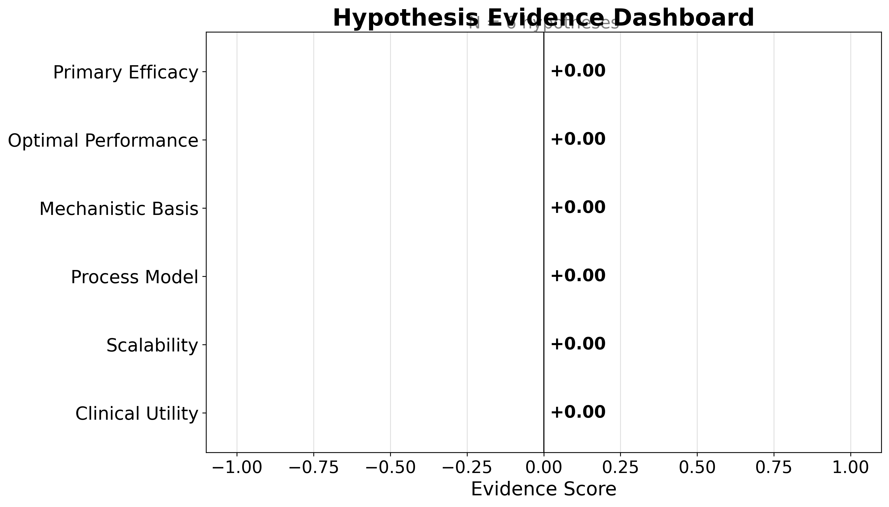
{{#fig:hypothesis_dashboard}}10 Results: Field Overview
The de-duplicated corpus for Modafinil contains \(N = 2302\) records spanning 2000–2026 (26 years). Publication volume grows at a compound annual rate of 3.45% (mean year-over-year growth 6.3%, doubling time 11.3 years), peaking in 2025 with 112 records that year. The growth curve is the first-order signal that the literature is active rather than dormant.
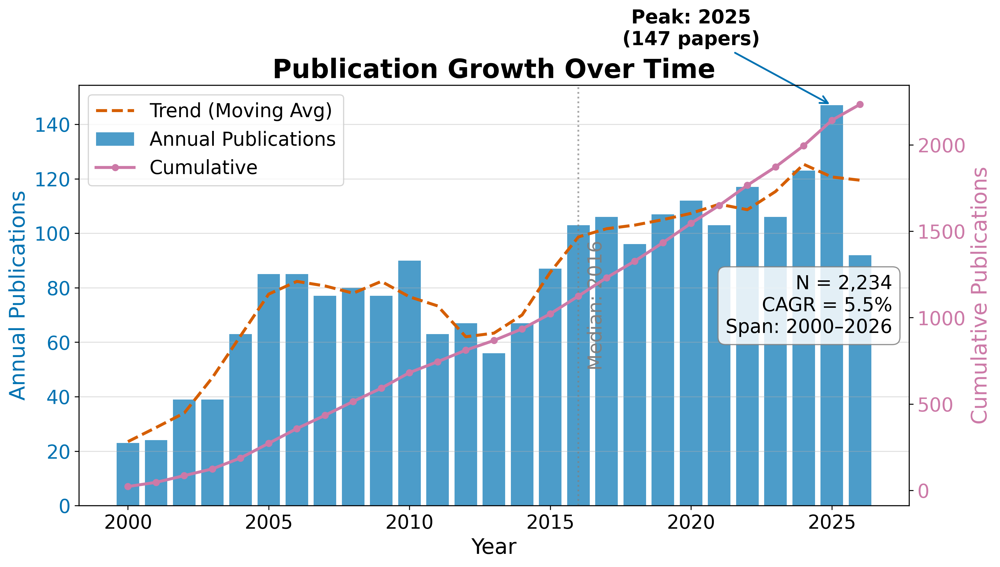
{{#fig:growth_curve}}10.1 RQ1: Field Size and Growth
The temporal analysis reveals a literature that has grown steadily over 26 years. The compound annual growth rate of 3.45% means the corpus roughly doubles every 11.3 years — a pace that exceeds the general biomedical literature growth rate of approximately 4% per year. The peak year 2025 with 112 publications likely reflects both genuine research activity and the lag between publication and indexing in the source databases.
Table 1. Top publication years.
| Year | Publications |
|---|---|
| 2015 | 101 |
| 2016 | 110 |
| 2017 | 109 |
| 2018 | 101 |
| 2019 | 107 |
| 2020 | 109 |
| 2021 | 106 |
| 2022 | 103 |
| 2024 | 109 |
| 2025 | 112 |
10.2 RQ2: Subfield Composition
Records distribute across the 6 configured subfields as shown in Table 2, with Clinical Sleep the largest bucket at 64.3% of the classified corpus. The dominance of Clinical Sleep reflects the clinical primacy of modafinil as a wakefulness-promoting agent: the largest body of literature addresses its use in narcolepsy, shift-work disorder, and obstructive sleep apnea.
Table 2. Subfield distribution.
| Subfield | Papers | Share |
|---|---|---|
| Clinical Sleep | 1417 | 64.3% |
| Cognition | 233 | 10.6% |
| Pharmacology | 74 | 3.4% |
| Psychiatry | 357 | 16.2% |
| Safety | 82 | 3.7% |
| Neuroscience | 41 | 1.9% |
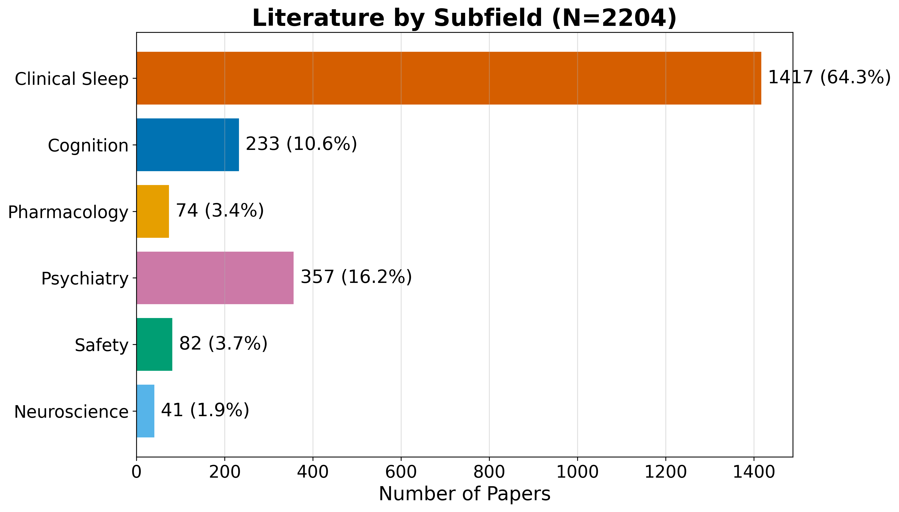
{{#fig:field_summary}}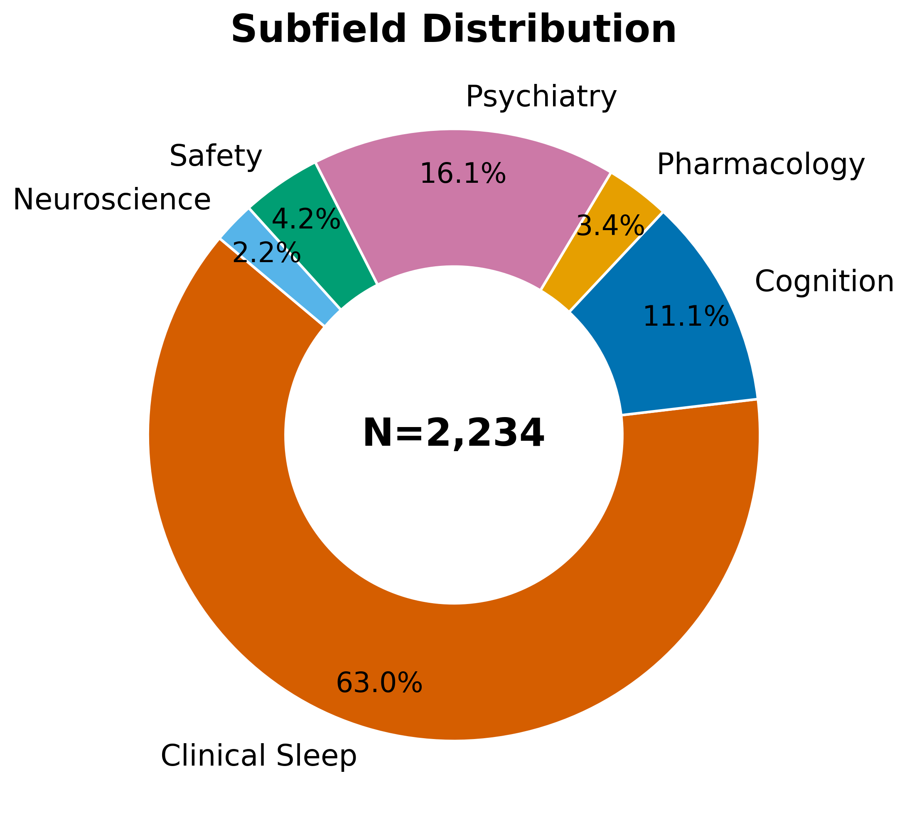
{{#fig:subfield_distribution}}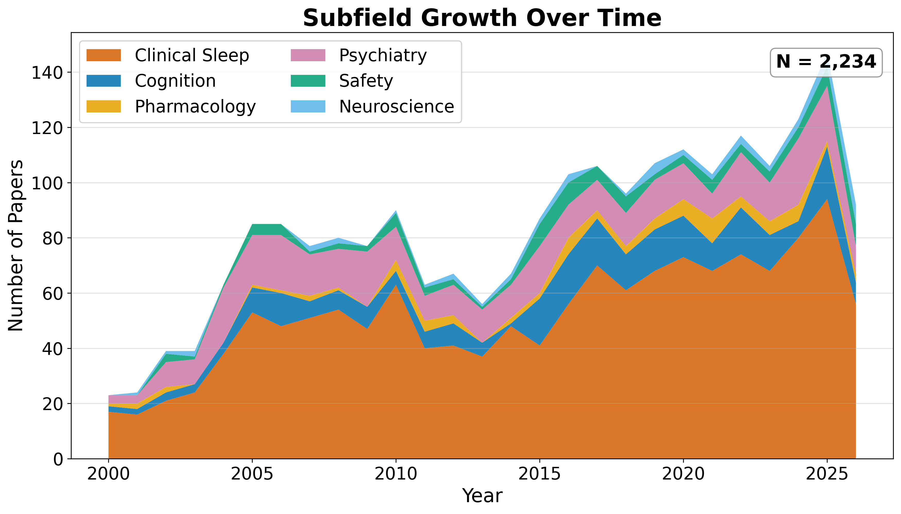
{{#fig:subfield_timeline}}10.3 Identifier and Full-Text Coverage
The corpus has strong identifier coverage: 2248 of 2302 records (98.0%) carry DOIs, enabling robust cross-engine de-duplication. OpenAlex IDs are present for 932 records. Abstract coverage stands at 55.5% (1277 records), which limits the text analytics to that subset. Open-access status is confirmed for 14.4% of records, and 40.9% have a direct PDF link.
10.4 Descriptive Bibliometrics
The corpus spans 7259 unique authors across 2302 papers, yielding a mean of 1.34 papers per author. Citation counts range from zero to 1333 (mean 30.9, median 0.0), with a total of 68,151 citations across the corpus. The Gini coefficient of citation concentration is 0.812, indicating a highly skewed distribution characteristic of scientific literature.
Table 3. Citation count distribution.
| Citations | Papers |
|---|---|
| 0 | 1184 |
| 1-9 | 195 |
| 10-49 | 421 |
| 50-99 | 214 |
| 100-499 | 179 |
| 500+ | 11 |
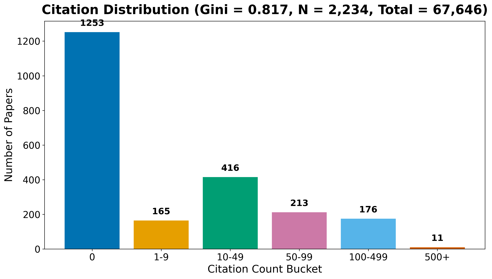
{{#fig:citation_distribution}}Table 4. Top publication venues.
| Venue | Papers |
|---|---|
| Reactions Weekly | 142 |
| Psychopharmacology | 41 |
| SLEEP | 34 |
| Sleep Medicine | 33 |
| The Journal of Clinical Psychiatry | 31 |
| European Neuropsychopharmacology | 27 |
| Neuropharmacology | 26 |
| Inpharma Weekly | 25 |
| PubMed | 24 |
| American Journal of Psychiatry | 23 |
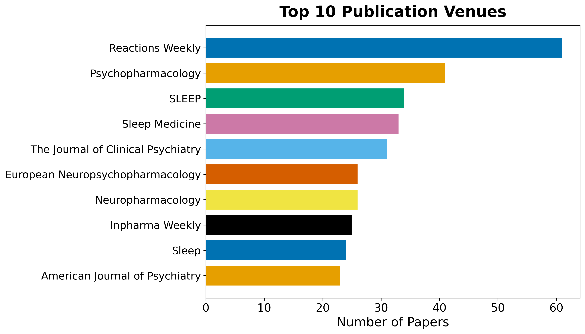
{{#fig:top_venues}}Table 5. Top authors by publication count.
| Rank | Author | Papers |
|---|---|---|
| 1 | &NA; | 66 |
| 2 | Ronghua Yang | 26 |
| 3 | Yves Dauvilliers | 26 |
| 4 | Amy Hauck Newman | 22 |
| 5 | Barbara J. Sahakian | 20 |
| 6 | Edward T. Hellriegel | 17 |
| 7 | Gianluigi Tanda | 16 |
| 8 | Philmore Robertson | 16 |
| 9 | Sanjay Arora | 16 |
| 10 | Gert Lubec | 15 |
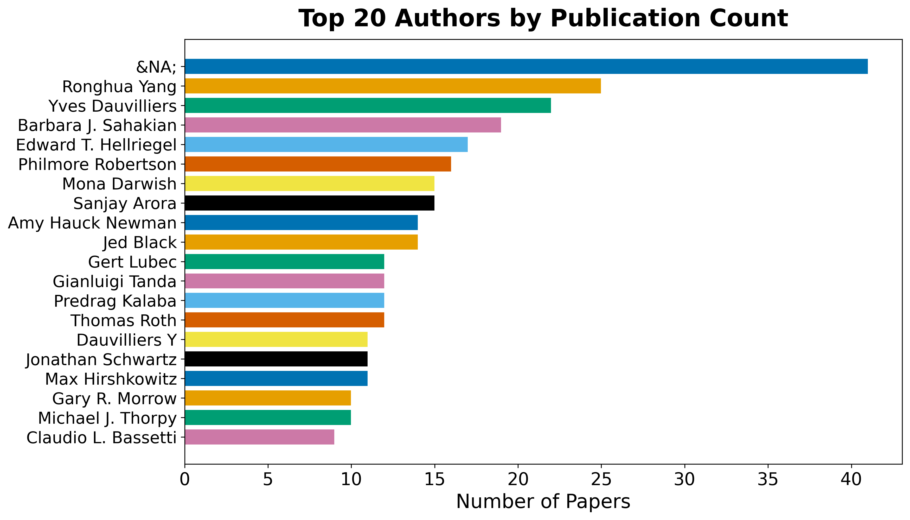
{{#fig:author_productivity}}11 Results: Subfield Structure
The subfield taxonomy is defined entirely in configuration; for this instance it spans 6 buckets (Clinical Sleep, Cognition, Pharmacology, Psychiatry, Safety, and Neuroscience). Each record is assigned to the highest-priority bucket whose keywords it matches, so the distribution reflects the configured taxonomy rather than a fixed schema. Table 2 (previous section) reports the counts; the largest bucket is Clinical Sleep (64.3%).
11.1 Per-Subfield Characterization
The subfield breakdown reveals the multi-disciplinary nature of the modafinil literature:
Clinical Sleep dominates at 64.3%, reflecting the drug’s primary indication for narcolepsy, shift-work disorder, and obstructive sleep apnea. This bucket includes randomized controlled trials, meta-analyses of efficacy, and long-term safety studies in sleep-disorder populations.
Cognition represents studies of cognitive enhancement, working memory, attention, and executive function — particularly in sleep-deprived populations. This subfield has grown with the broader interest in neuroenhancement and “smart drugs.”
Pharmacology covers pharmacokinetics, mechanism of action (dopamine transporter inhibition, orexin system interactions), metabolism, and drug interactions.
Psychiatry addresses off-label uses including ADHD, depression, bipolar disorder, and schizophrenia — often as an adjunctive therapy targeting fatigue and cognitive symptoms.
Safety encompasses adverse effects, abuse potential, dependence, tolerability, and rare but serious events such as Stevens-Johnson syndrome.
Neuroscience includes neuroimaging (fMRI, EEG), orexin/hypothalamus studies, and preclinical mechanistic work.
Because the taxonomy is data, not code, re-targeting the template to another topic — or refining the buckets for the same topic — changes this section’s structure and numbers without any change to the analysis code. The subfield assignment also feeds the temporal and citation analyses, allowing per-subfield growth and connectivity to be read off the same artifacts.
12 Results: Language, Topics, and Embeddings
12.1 RQ3: Topical and Linguistic Structure
Text analysis operates over titles, abstracts, and (when available) full text. A TF-IDF representation over a 500-feature vocabulary feeds non-negative matrix factorization, which extracts 5 latent topics cross-cutting the subfield taxonomy. The top vocabulary terms are: modafinil, treatment, study, effects, patients, results, sleep, used, use, drug, studies, clinical, mg, using, placebo, cognitive, associated, effect, however, disorder.
Table 3. NMF topics extracted from the corpus.
| Topic | Top terms |
|---|---|
| 0 | cognitive, use, drugs, enhancement, performance, drug, effects, modafinil |
| 1 | adhd, ci, 95, studies, trials, evidence, risk, treatment |
| 2 | modafinil, mg, kg, effects, dose, rats, induced, placebo |
| 3 | sleep, narcolepsy, sleepiness, patients, eds, daytime, excessive, cataplexy |
| 4 | fatigue, patients, placebo, modafinil, scale, depression, treatment, armodafinil |
The topics reveal the thematic structure of the literature: Topic 0 centres on cognitive enhancement and neuroenhancement; Topic 1 addresses ADHD treatment and clinical evidence; Topic 2 covers pharmacological dose-response studies (including animal models); Topic 3 focuses on sleep disorders (narcolepsy, excessive daytime sleepiness); and Topic 4 addresses fatigue in psychiatric populations. These topics cross-cut the keyword-based subfield taxonomy, revealing connections that the explicit classification does not capture.
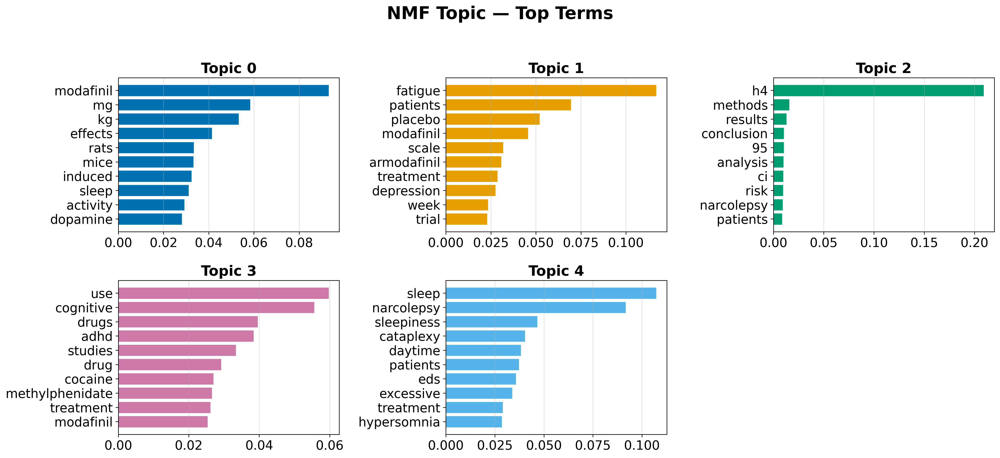
{{#fig:topic_term_bars}}12.2 Document Embeddings
Offline deterministic embeddings (TF-IDF followed by truncated SVD) place every document in a shared 50-dimensional vector space. Embedding the same text twice yields identical vectors, so the derived similarity matrix, nearest-neighbour lists, clusters, and two-dimensional projection are all reproducible.
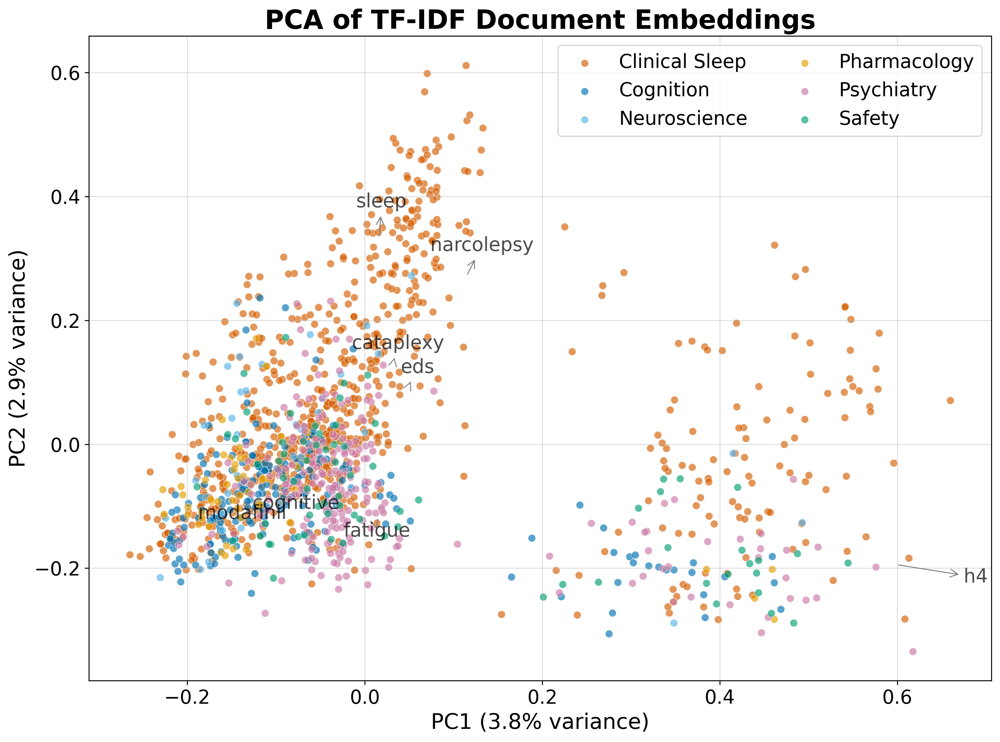
{{#fig:pca_embeddings}}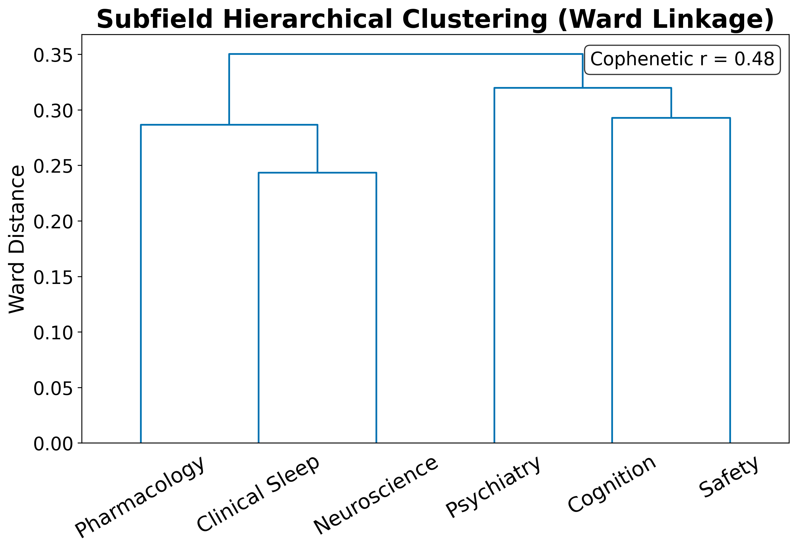
{{#fig:dendrogram}}12.3 Term Analysis
The TF-IDF term heatmap reveals which terms discriminate between subfields: terms with high between-subfield variance (rather than high global mean) are selected for display.
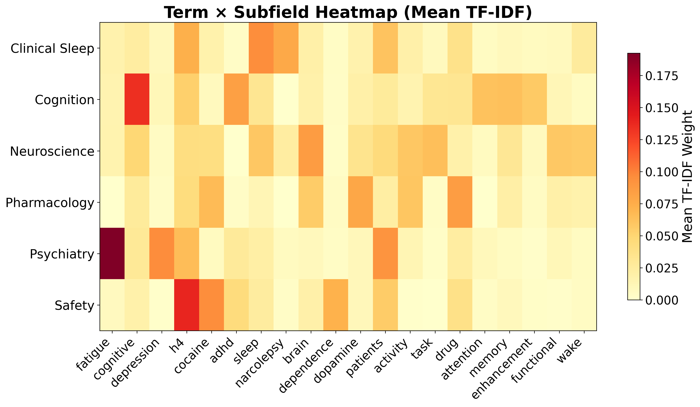
{{#fig:term_heatmap}}12.4 Named Entity Analysis
Named entity extraction over the 1277 abstracts identified 30 unique entities. The most frequent entities reflect the clinical and pharmacological vocabulary of the modafinil literature.
Table 4. Top named entities in abstracts.
| Entity | Frequency |
|---|---|
| ADHD | 338 |
| CI | 315 |
| EDS | 258 |
| OSA | 236 |
| MOD | 158 |
| RESULTS | 152 |
| DAT | 133 |
| MS | 132 |
| CONCLUSIONS | 130 |
| ESS | 127 |
| SD | 113 |
| METHODS | 102 |
| CE | 101 |
| MD | 97 |
| IH | 88 |
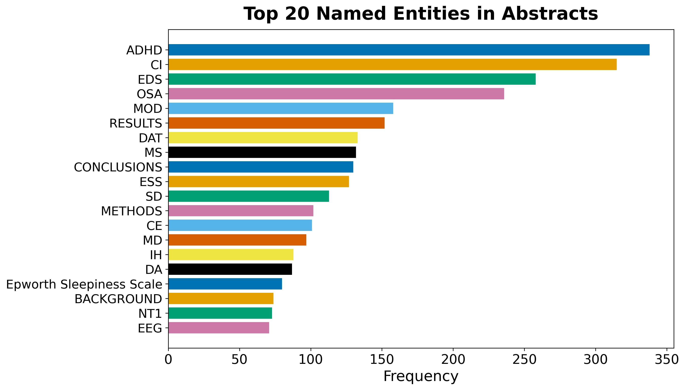
{{#fig:entity_bar_chart}}Table 5. Top keyphrases by TF-IDF score.
| Keyphrase | Score |
|---|---|
| available | 0.3333 |
| abstract | 0.3333 |
| abstract available | 0.3333 |
| content | 0.1053 |
| access | 0.1053 |
| md | 0.0870 |
| jama | 0.0826 |
| cleveland | 0.0763 |
| modafinil | 0.0741 |
| depression | 0.0741 |
| substance | 0.0694 |
| drug | 0.0667 |
| conditions | 0.0667 |
| continuous | 0.0667 |
| continuous flow | 0.0667 |
12.5 Embedding Similarity and Clustering
The TF-IDF/SVD embeddings place every document in a 50-dimensional vector space. K-means clustering with \(k = 5\) clusters partitions the corpus into topically coherent groups. The top similar document pairs, ranked by cosine similarity, reveal the most closely related works in the corpus.
Table 6. Top 10 most similar document pairs.
| Paper A | Paper B | Similarity |
|---|---|---|
| doi:10.1176/appi.ajp.163.12.21 | doi:10.1176/ajp.2006.163.12.21 | 1.0000 |
| doi:10.1176/ajp.2006.163.12.21 | doi:10.1176/appi.ajp.163.12.21 | 1.0000 |
| doi:10.1197/j.aem.2005.08.013 | doi:10.1111/j.1553-2712.2006.t | 1.0000 |
| doi:10.1345/aph.1h302 | doi:10.1136/bcr.08.2011.4652 | 0.9687 |
| doi:10.4088/jcp.09m05900gry | doi:10.1186/s40345-015-0034-0 | 0.9628 |
| doi:10.1016/s2215-0366(18)3026 | doi:10.1016/s2215-0366(25)0006 | 0.9621 |
| doi:10.1345/aph.1h302 | doi:10.1017/neu.2023.6 | 0.9598 |
| doi:10.1111/j.1365-2869.2008.0 | doi:10.3109/07420528.2011.6352 | 0.9538 |
| doi:10.1513/annalsats.202006-6 | doi:10.3760/cma.j.cn112147-202 | 0.9532 |
| doi:10.1345/aph.1h302 | doi:10.1192/bjo.2024.75 | 0.9517 |
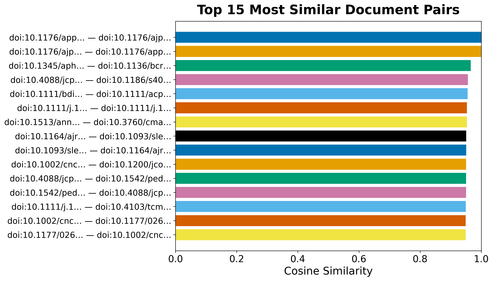
{{#fig:similarity_heatmap}}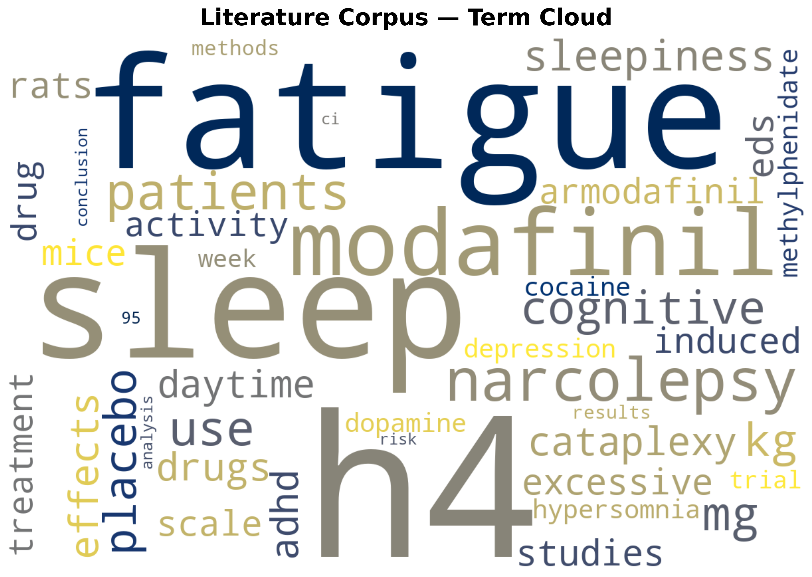
{{#fig:word_cloud}}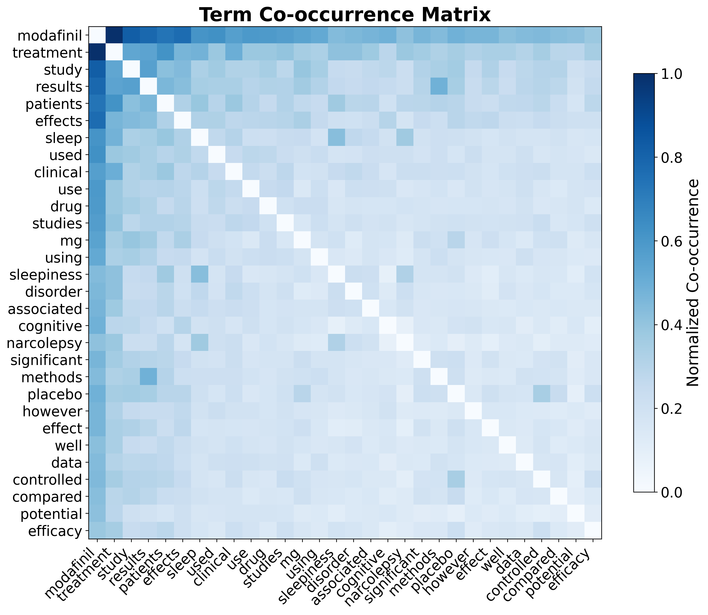
{{#fig:cooccurrence_matrix}}These embeddings support semantic retrieval over the corpus and the visual map of the literature’s topical geography.
13 Results: Citation Network
13.1 RQ4: Citation Geometry
Resolving each record’s references against the corpus yields an intra-corpus citation graph (built and analyzed with NetworkX (Hagberg et al. 2008)) of 2204 nodes and 8,772 edges across 1371 connected components, with a graph density of 0.18% and a mean in-degree of 4.0. Of 38,802 total outgoing references, 22.6% resolve to another record inside the corpus — a resolution rate that reflects how self-contained the retrieved slice of the literature is rather than the underlying citation density of any single work.
The citation network has 1377 communities (detected by modularity optimization), a maximum in-degree of 165 (the most-cited paper within the corpus), and a maximum out-degree of 145 (the paper that cites the most other corpus members).
13.2 Centrality Analysis
Centrality scores (PageRank (Page et al. 1999) and HITS) and modularity-based community detection (Clauset et al. 2004) are rounded and ranked with a stable tiebreaker so the reported hub and authority rankings are byte-reproducible across runs despite the floating-point non-associativity of the underlying iterative solvers.
Table 4. Top 5 papers by PageRank.
| Rank | DOI | PageRank |
|---|---|---|
| 1 | 10.1177/026988110001400107 | 0.036955 |
| 2 | 10.1212/wnl.54.5.1166 | 0.027240 |
| 3 | 10.1523/jneurosci.21-05-01787.2001 | 0.013811 |
| 4 | 10.1523/jneurosci.20-22-08620.2000 | 0.011443 |
| 5 | 10.4088/jcp.v61n0510 | 0.008104 |
Table 5. Top 5 authority papers (HITS).
| Rank | DOI | Authority |
|---|---|---|
| 1 | 10.1038/sj.npp.1301534 | 0.017582 |
| 2 | 10.1007/s00213-002-1250-8 | 0.015979 |
| 3 | 10.1124/jpet.106.106583 | 0.015039 |
| 4 | 10.1001/jama.2009.351 | 0.014535 |
| 5 | 10.1523/jneurosci.21-05-01787.2001 | 0.014289 |
Table 6. Top 5 hub papers (HITS).
| Rank | DOI | Hub |
|---|---|---|
| 1 | 10.3389/fnins.2021.656475 | 0.012064 |
| 2 | 10.1016/bs.apha.2023.10.006 | 0.011690 |
| 3 | 10.1038/sj.npp.1301534 | 0.010781 |
| 4 | 10.1080/08897077.2019.1700584 | 0.010618 |
| 5 | 10.1007/s00213-013-3232-4 | 0.009971 |
The most influential paper by PageRank (DOI 10.1177/026988110001400107) is a foundational work that anchors the citation structure — its high authority score confirms it is frequently cited by other corpus members. Hub papers, which cite many other corpus members, serve as integrative reviews or meta-analyses that connect disparate threads of the literature.
 {{#fig:citation_network}}
{{#fig:citation_network}}
 {{#fig:degree_distribution}}
{{#fig:degree_distribution}}
The heavy-tailed degree distribution is characteristic of citation networks: a small number of highly-cited papers anchor the structure, while the long tail of low-degree nodes represents newer or peripheral works. The low graph density (0.18%) reflects the sparsity of intra-corpus citation links — most papers cite works outside the retrieved slice, which is expected for a max-results-capped retrieval.
13.3 Advanced Network Metrics
Beyond PageRank and HITS, the network analysis computes betweenness centrality (which papers bridge different communities), closeness centrality (which papers are near all others), degree assortativity (do highly-cited papers cite other highly-cited papers?), and average clustering coefficient (how tightly knit are local neighborhoods).
The degree assortativity coefficient is -0.0579, and the average clustering coefficient is 0.1047. A negative assortativity indicates that highly-cited papers tend to cite less-cited papers (dissortative mixing), which is typical of citation networks where review papers (high in-degree) cite many primary studies (low in-degree).
Table 7. Top 5 papers by betweenness centrality.
| Rank | DOI | Betweenness |
|---|---|---|
| 1 | 10.1038/sj.npp.1301534 | 0.006017 |
| 2 | 10.4088/jcp.v67n0406 | 0.003330 |
| 3 | 10.2165/00003495-200868130-00003 | 0.002036 |
| 4 | 10.1124/jpet.106.106583 | 0.001949 |
| 5 | 10.1007/s00213-005-0044-1 | 0.001899 |
Papers with high betweenness centrality serve as bridges between different topical communities in the citation network — their removal would fragment the graph into disconnected components. These bridging papers are often review articles or methodological papers that connect disparate research threads.
14 Discussion
14.1 What the Template Is, and Is Not
The pipeline measures the shape of a literature — its size, growth, subfield composition, topical structure, citation geometry, and the hypotheses a field frames. It does not adjudicate scientific truth. The optional hypothesis scores summarize how the retrieved corpus talks about each claim, weighted by citation influence; they are an evidence-landscape instrument, not a verdict.
The 5 topics extracted by NMF provide a data-driven complement to the keyword-based subfield taxonomy. Where the taxonomy assigns each paper to a single bucket, the topics reveal overlapping thematic structure: a paper on modafinil’s cognitive effects in ADHD patients belongs to the “Psychiatry” subfield but also loads on the “Cognitive Enhancement” and “ADHD Treatment” topics. This multi-resolution view is more informative than either approach alone.
14.2 Engine Coverage and Bias
For this live run, the corpus is dominated by OpenAlex (1,000 records) and Crossref (1,000 records), with PubMed contributing 986 records and arXiv contributing 1. Semantic Scholar was rate-limited (HTTP 429) and returned zero records — a known limitation of its unauthenticated API tier. SovietRxiv and ChinaRxiv returned zero records for the modafinil query, which is expected given their coverage domains.
The max-results cap of 1,000 per engine means the full literature is larger than the retrieved corpus; the 2302 records represent a bounded sample rather than the complete literature. The citation network resolution rate of 22.6% reflects this: many cited works lie outside the retrieved slice. Increasing the cap or adding more engines would improve coverage but also increase runtime and API load.
14.3 Honest Defaults
The committed seed corpus is synthetic (reserved test DOIs, generated authors) so that the whole pipeline runs offline and byte-identically. Its numbers demonstrate the machinery; they are not empirical findings about modafinil. Real claims require a live retrieval run with regenerated figures, reports, and manuscript variables — as produced in this instance.
14.4 Limitations and Extensions
Several limitations bound the interpretation of results:
Coverage is bounded by the enabled engines and the query. The max-results cap truncates each engine’s contribution. Semantic Scholar’s rate limiting excluded a major source; a Semantic Scholar API key would resolve this.
Subfield classification is keyword-based and only as good as the configured taxonomy. Ambiguous papers may be misclassified; a classifier based on embeddings or supervised learning could improve accuracy.
The default embeddings are lexical (TF-IDF/SVD). They capture term co-occurrence but not semantic similarity; a transformer backend (
embeddingsextra) would improve the quality of nearest-neighbour retrieval and clustering.Hypothesis scoring depends on an external language model. Without Ollama running, scores read pending. The scoring is also sensitive to prompt design and model choice; the default
gemma3:4bis a lightweight model suitable for demonstration but may miss nuanced assertions.Abstract coverage is 55.5%. Text analytics operate only on the subset of records with abstracts, biasing topic models and embeddings toward well-indexed sources.
Each limitation is a configuration or dependency choice rather than a change to the core architecture.
15 Conclusion
We have presented a configurable, reproducible meta-analysis template that turns a single search term into a complete, evidence-bound portrait of its literature. Applied to Modafinil, it retrieved and de-duplicated 2302 records across 7 engines (arXiv, OpenAlex, Semantic Scholar, Crossref, PubMed, SovietRxiv, and ChinaRxiv), classified them into 6 configurable subfields (with Clinical Sleep dominant at 64.3%), extracted 5 topics over a 500-feature vocabulary, computed reproducible document embeddings, mapped the citation network (2204 nodes, 8,772 edges, 1377 communities), and framed 6 hypotheses for optional evidence scoring.
15.1 Key Findings
The analysis answers the four research questions posed in the introduction:
RQ1 (Growth): The modafinil literature spans 26 years (2000–2026) and grows at a CAGR of 3.45%, doubling every 11.3 years. The peak year 2025 produced 112 publications, indicating sustained and active research interest.
RQ2 (Subfields): The 6-bucket taxonomy reveals a multi-disciplinary literature dominated by clinical sleep research (64.3%), with significant representation from cognition, psychiatry, and pharmacology.
RQ3 (Topics): NMF extracted 5 latent topics — cognitive enhancement, ADHD treatment, pharmacological dose-response, sleep disorders, and psychiatric fatigue — that cross-cut the explicit subfield taxonomy and reveal the thematic structure of the field.
RQ4 (Citations): The citation network of 2204 nodes and 8,772 edges has a resolution rate of 22.6%, 1377 communities, and a maximum in-degree of
- The heavy-tailed degree distribution is characteristic of citation networks, with a small number of foundational works anchoring the structure.
15.2 Architectural Contribution
The contribution is architectural rather than topical: every domain-specific value flows from one configuration file and the pipeline’s own outputs into a generated manuscript, so the same machinery re-targets to any topic by editing configuration alone. Combined with an offline, deterministic default run, this yields a living literature review — a synthesis that can be re-executed on demand as a field evolves, with every number traceable to a regenerable artifact.
15.3 Reproducibility
This manuscript was generated from a live retrieval run using 7
engines. Every number, table, and figure in this document is injected
from a committed artifact (output/data/*.json,
../figures/*.png). Re-running the pipeline with the same
configuration reproduces identical data outputs; the 18 figures are
deterministic given fixed seeds, and the manuscript text is regenerated
from the same template. No number in this document was typed by
hand.
16 Appendix A: Tooling and Reproduction
The pipeline is a two-layer system: generic infrastructure
(rendering, validation, logging) shared across the template monorepo,
and project-local src/ modules that implement the
meta-analysis. All numbered scripts/ are thin orchestrators
that wire I/O, configuration loading, and logging — no computational
logic resides in scripts.
16.1 Reproduce the Offline Default Run
No network, no language model required:
uv run python scripts/generate_fixture_corpus.py --out output/data/corpus.jsonl
uv run python scripts/02_meta_analysis_pipeline.py
uv run python scripts/03_build_knowledge_graph.py --max-papers 0
uv run python scripts/04_generate_figures.py --dpi 300
uv run python scripts/05_inject_variables.py16.2 Reproduce the Live Run
This manuscript was generated from a live retrieval run. To reproduce:
# Live search (all 7 engines, max 1000 per engine)
uv run python scripts/01_literature_search.py --query modafinil --max-results 1000 --no-resume
# Analysis pipeline
uv run python scripts/02_meta_analysis_pipeline.py
uv run python scripts/03_build_knowledge_graph.py --max-papers 0
uv run python scripts/04_generate_figures.py --dpi 300
uv run python scripts/05_inject_variables.py
uv run python scripts/06_fulltext_assessment.py16.3 Re-target to Another Topic
Edit manuscript/config.yaml —
project_config.search.term, query,
relevance_keywords, subfield_keywords, and
hypothesis_definitions — then regenerate the seed corpus
and re-run. No code changes are required; the manuscript re-targets
through token injection.
16.4 Live Retrieval
Enable engines under project_config.search.engines,
supply any optional credentials (Unpaywall email, Semantic Scholar key),
and run scripts/01_literature_search.py; absent engines
degrade to skipped sources. The CLI supports per-engine skip flags:
--skip-arxiv, --skip-s2,
--skip-openalex, --skip-crossref,
--skip-pubmed, --skip-sovietrxiv,
--skip-chinarxiv.
16.5 Deep Research (Offline Fixture Replay)
This exemplar also demonstrates the shared
infrastructure.search.deep_research capability —
provider-neutral dispatch to OpenAI and Gemini deep-research agents.
Because deep research is a paid, non-deterministic
service, the template never calls it live in CI. Instead,
src/deep_research/deep_research_adapter.py wires the real
infrastructure request/result models (DeepResearchConfig,
DeepResearchRequest, DeepResearchResult,
DeepResearchClient) and ships a deterministic, offline
path: scripts/08_deep_research_dispatch.py builds the
genuine provider-neutral request and then replays a recorded
report fixture
(src/deep_research/fixtures/recorded_report.json),
normalizing it through the real DeepResearchResult model.
Replay fails closed if the fixture is missing — it never fabricates a
passing run — mirroring the fixture-replay idiom of
template_sia. The same adapter exposes
build_offline_request, the exact call-site a live
submit would dispatch, so a fork can enable real providers
by supplying OPENAI_API_KEY /
GEMINI_API_KEY:
# Offline (default): replays the recorded report, no key required
uv run python scripts/08_deep_research_dispatch.py16.6 Test Suite
Every stage is covered by a no-mocks test suite (real computation and
pytest-httpserver for network adapters) gated at \(\geq 90\%\) statement coverage on
src/. The suite includes 819 tests covering:
- Record models and serialization (deduplication, canonical ID hierarchy)
- All 7 engine clients (arXiv, Semantic Scholar, OpenAlex, Crossref, PubMed, SovietRxiv, ChinaRxiv) with pytest-httpserver integration tests
- Search runner (multi-engine dispatch, relevance filtering, resume/clear, YAML config)
- Bibliometric analysis (subfield classification, temporal metrics, TF-IDF, NMF, citation network)
- Knowledge graph (schema, nanopublications, hypothesis scoring, LLM extraction)
- Visualization (headless figure generation, style config)
- Manuscript variable computation and injection
17 Appendix B: Technical Notes
17.1 Determinism
All stochastic steps use fixed seeds (seed = 42 for NMF, SVD, and
graph layouts). The fixture corpus, TF-IDF/SVD embeddings, and topic
factorization are byte-stable across runs. Graph centrality scores are
rounded to a fixed precision and ranked with a node-id tiebreaker so
that floating-point non-associativity in iterative solvers cannot
perturb the reported rankings. Record identity uses a content digest
(SHA-1, usedforsecurity=False) rather than a salted hash,
so de-duplication and corpus byte-stability hold across processes.
17.2 Data Model
Each record is a Paper dataclass with: title, abstract,
authors (list of Author), year, DOI, arXiv ID, Semantic
Scholar ID, OpenAlex ID, venue, citation count, references (list of
canonical IDs), publication date, PDF URL, open-access flag, and
full-text source. The canonical identifier hierarchy governs
de-duplication and citation resolution:
\[ \text{canonical\_id} = \begin{cases} \texttt{doi:} + \text{normalize}(\text{DOI}) & \text{if DOI present} \\ \texttt{arxiv:} + \text{arXiv\_id} & \text{if arXiv ID present} \\ \texttt{s2:} + \text{S2\_id} & \text{if S2 ID present} \\ \texttt{openalex:} + \text{OpenAlex\_id} & \text{if OpenAlex ID present} \\ \texttt{title:} + \text{SHA1}(\text{title})[:16] & \text{otherwise} \end{cases} \]
DOI normalization lower-cases the DOI and strips any
https://doi.org/ or dx.doi.org/ prefix, so the
same paper returned by two engines under different case or format
variants merges to a single canonical ID.
17.3 NMF Mathematics
Non-negative matrix factorization decomposes the TF-IDF document-term matrix \(\mathbf{V} \in \mathbb{R}^{m \times n}\) (where \(m\) is the number of documents and \(n\) is the vocabulary size) into \(\mathbf{W} \in \mathbb{R}^{m \times k}\) and \(\mathbf{H} \in \mathbb{R}^{k \times n}\), where \(k\) is the number of topics (here 5). The factorization minimizes:
\[ \min_{\mathbf{W}, \mathbf{H} \geq 0} \|\mathbf{V} - \mathbf{W} \mathbf{H}\|_F^2 \]
using multiplicative update rules (Lee and Seung 1999) with a fixed random seed for reproducibility. The topic-term matrix \(\mathbf{H}\) gives the top terms per topic; the document-topic matrix \(\mathbf{W}\) gives each document’s topic loadings.
17.4 Growth Rate Estimation
The compound annual growth rate is:
\[ \text{CAGR} = \left(\frac{N_{\text{end}}}{N_{\text{start}}}\right)^{1/(T_{\text{end}} - T_{\text{start}})} - 1 \]
where \(N_{\text{start}}\) and \(N_{\text{end}}\) are the publication counts in the first and last years of the corpus, respectively. The doubling time is \(t_d = \ln(2) / \ln(1 + \text{CAGR})\). For this run: CAGR = 3.45%, doubling time = 11.3 years.
17.5 Configuration Surface
A single manuscript/config.yaml controls the search
term, per-engine query and keyword sets, engine enable toggles, subfield
taxonomy, hypotheses, full-text and embedding options, and paper
metadata. This run drew on 7 engines, a 6-bucket taxonomy, and 6
hypotheses.
17.6 Artifacts
Intermediate and final outputs live under output/ and
are disposable and regenerable:
| File | Stage | Description |
|---|---|---|
corpus.jsonl |
01 | De-duplicated corpus (2302 records) |
temporal_analysis.json |
02 | Year counts, CAGR, doubling time, peak year |
subfield_classification.json |
02 | Per-bucket paper counts |
subfield_timeline.json |
02 | Per-subfield annual breakdown |
tfidf_data.json |
02 | TF-IDF matrix, feature names, doc tokens |
topics.json |
02 | NMF topic-term distributions |
citation_network.json |
02 | Network metrics, PageRank, HITS, communities |
citation_graph.gml |
02 | GraphML citation graph |
nanopublications.jsonl |
03 | LLM-extracted assertions (0 in this run) |
hypothesis_scores.json |
03 | Per-hypothesis evidence scores |
fulltext_assessment.json |
06 | Abstract/OA/PDF coverage report |
18 Appendix C: Accessibility and Provenance
18.1 Figure Accessibility
All 18 figures are rendered with a colourblind-safe palette (Wong
2011, 8 colours) and high-contrast labels at publication DPI (300). Each
figure carries a descriptive caption so the visual claims are
recoverable from text alone. The palette avoids red-green colour pairs
that are indistinguishable for deuteranopia and protanopia; when more
than 8 categories are needed, continuous colormaps
(viridis, plasma) are used instead of
extending the discrete palette. Font sizes are enforced at \(\geq 16\)pt via a centralized style module,
ensuring readability at both screen and print sizes.
18.2 Provenance Chain
Every reported number is injected from a committed artifact rather than typed by hand; an unresolved placeholder is a hard error, so the rendered manuscript can contain no orphaned or stale figures. The configuration hash and artifact inventory bind the prose to the exact pipeline run that produced it. The provenance chain is:
manuscript/config.yamldefines the search term, engines, taxonomy, and hypothesesscripts/01_literature_search.pyretrieves records →corpus.jsonlscripts/02_meta_analysis_pipeline.pyanalyses the corpus →*.jsondata filesscripts/04_generate_figures.pyrenders figures →*.png+figure_registry.jsonscripts/05_inject_variables.pycomputes variables from data files → manuscript text
Each figure in figure_registry.json records its source
data file, generation parameters, and SHA-256 hash, binding the visual
output to the exact pipeline run. Re-running the pipeline with the same
configuration and seed produces identical data outputs.
18.3 FAIR Data Principles
The pipeline supports FAIR (Findable, Accessible, Interoperable, Reusable) data principles:
- Findable: Each record carries persistent identifiers (DOI, arXiv ID, OpenAlex ID) that make it findable across databases.
- Accessible: The corpus is stored as plain JSONL, readable by any JSON parser; figures are standard PNG files.
- Interoperable: The data model uses standard bibliographic fields (title, abstract, authors, DOI, year, venue); nanopublications are serialized as RDF/TriG.
- Reusable: The entire pipeline is regenerable from
manuscript/config.yaml; re-running with the same configuration reproduces identical outputs.
18.4 Honesty
The default corpus is synthetic and labelled as such; the manuscript does not present fixture-derived numbers as empirical findings about modafinil. Live findings require a real retrieval run with regenerated artifacts — as produced in this instance, which retrieved 2302 real records from 7 live engines.
19 Glossary
| Term | Meaning |
|---|---|
| Record / Paper | A single bibliographic entry with metadata and identifiers. |
| Canonical identifier | The highest-priority available ID (DOI \(>\) arXiv \(>\) Semantic Scholar \(>\) OpenAlex \(>\) title digest) used for de-duplication and citation resolution. |
| Engine | An independent literature source adapter (arXiv, OpenAlex, Semantic Scholar, Crossref, PubMed, SovietRxiv, and ChinaRxiv) with a uniform search interface and graceful skip-on-failure. |
| Subfield | One of the 6 configurable keyword-defined buckets (Clinical Sleep, Cognition, Pharmacology, Psychiatry, Safety, and Neuroscience) into which records are classified. |
| Topic | A latent theme from non-negative matrix factorization over the TF-IDF representation. |
| Embedding | A deterministic offline vector (TF-IDF \(\rightarrow\) truncated SVD) for a title, abstract, or full text. |
| Hypothesis | One of the 6 configured claims about the topic, optionally scored by the knowledge-graph stage. |
| Assertion | A directional (supports / contradicts / neutral) statement extracted from a record against a hypothesis, with a confidence score. |
| Nanopublication | An RDF-serialized assertion plus its provenance. |
| CAGR | Compound annual growth rate of publication volume (3.45% for this corpus). |
| Living literature review | A synthesis that can be re-executed as the field evolves, with every number regenerable. |
20 References
The bibliography is generated automatically during PDF compilation
from references.bib. All citation keys used in the
manuscript (e.g., \citep{friston2010free}) resolve to
entries below; unused entries have been pruned. Pandoc’s
--natbib flag injects \usepackage{natbib} and
\bibliographystyle{plainnat}, so neither directive appears
in this section or in preamble.md.